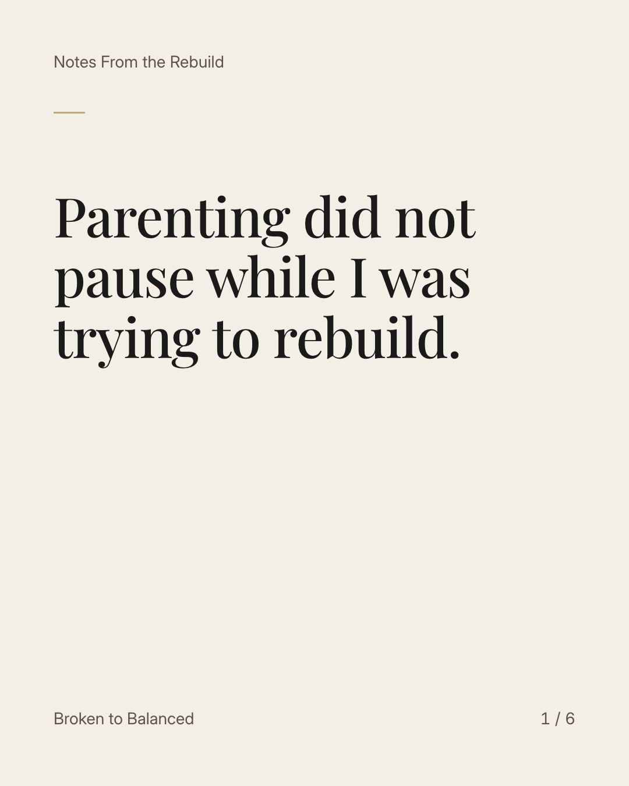
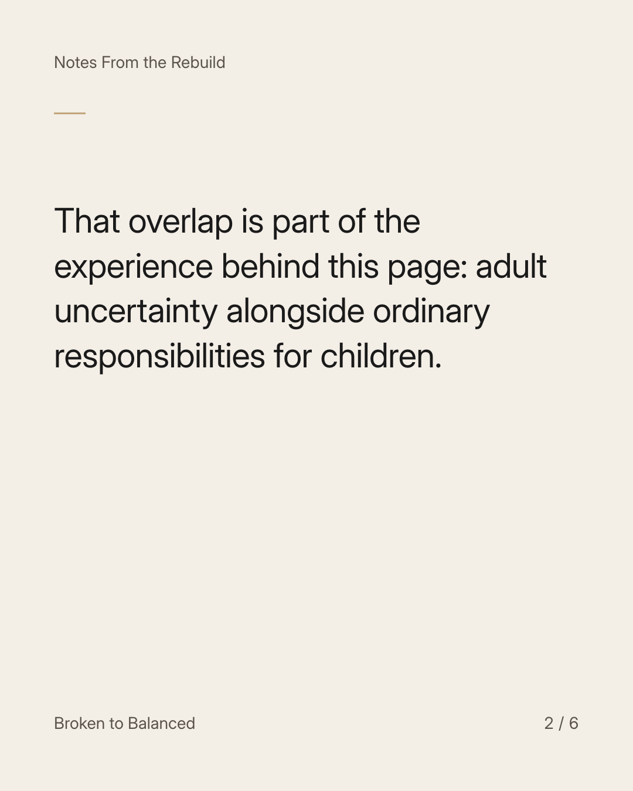
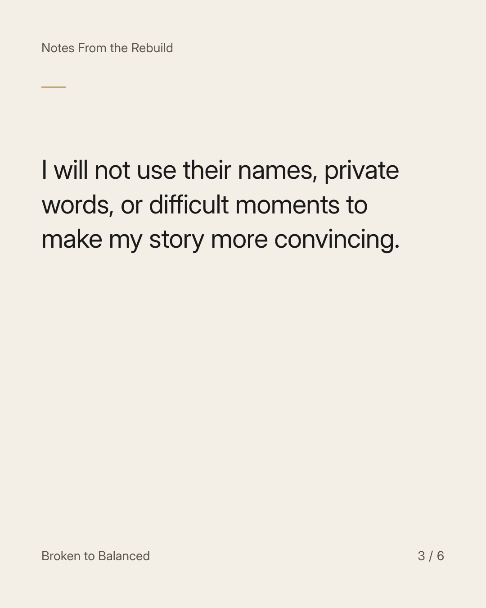
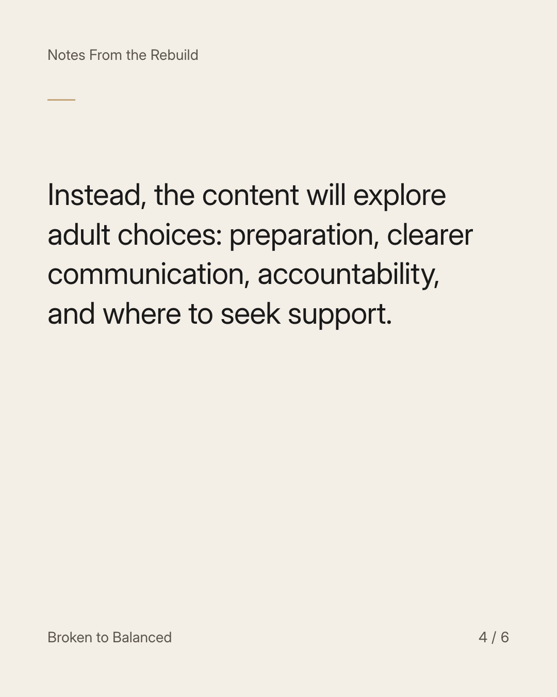
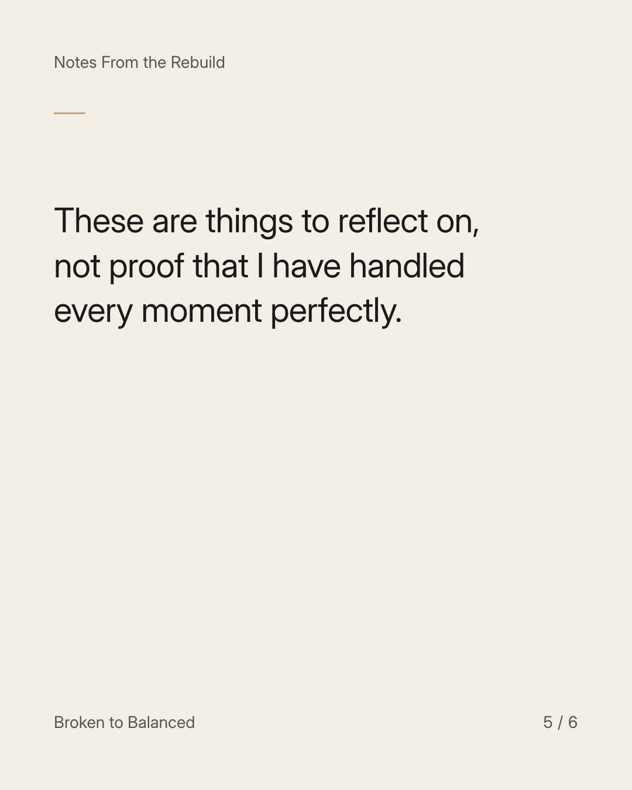
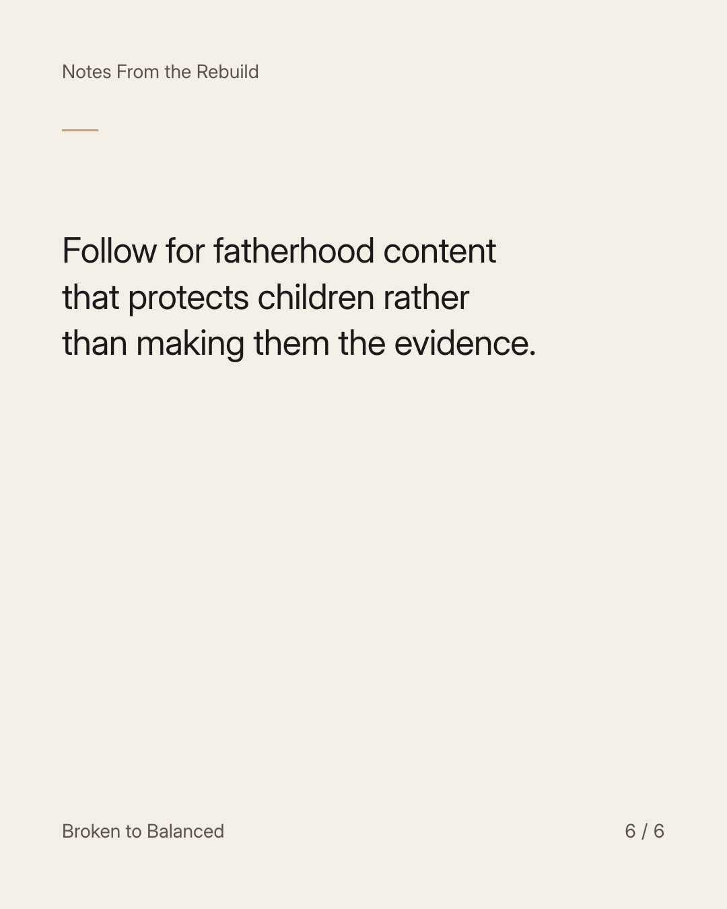

Exact text and accessibility text
Parenting did not pause while I was trying to rebuild.
Slide 1 of 6. Parenting did not pause while I was trying to rebuild.


Exact text and accessibility text
That overlap is part of the experience behind this page: adult uncertainty alongside ordinary responsibilities for children.
Slide 2 of 6. That overlap is part of the experience behind this page: adult uncertainty alongside ordinary responsibilities for children.


Exact text and accessibility text
I will not use their names, private words, or difficult moments to make my story more convincing.
Slide 3 of 6. I will not use their names, private words, or difficult moments to make my story more convincing.


Exact text and accessibility text
Instead, the content will explore adult choices: preparation, clearer communication, accountability, and where to seek support.
Slide 4 of 6. Instead, the content will explore adult choices: preparation, clearer communication, accountability, and where to seek support.


Exact text and accessibility text
These are things to reflect on, not proof that I have handled every moment perfectly.
Slide 5 of 6. These are things to reflect on, not proof that I have handled every moment perfectly.


Exact text and accessibility text
Follow for fatherhood content that protects children rather than making them the evidence.
Slide 6 of 6. Follow for fatherhood content that protects children rather than making them the evidence.
Exact caption
Plain-text fallback: select and copy the caption.